Cómo tocarlo
Un paseo por la pantalla, tarjeta por tarjeta. Cada parte tiene una imagen de la app sonando, lo que hace y lo que hace cada control. Los textos son los mismos de LEARN, dentro de la app.
La pantalla

En el centro, la esfera de agua con los cinco organismos; alrededor, las tarjetas, numeradas de 01 a 11; abajo, la franja del deseo; arriba, la cabecera.
El primer control de cada tarjeta es su puerta: la cantidad de ese módulo en la mezcla. En cero, el módulo está apagado y los demás controles quedan en gris. Suba primero la puerta, después mueva los demás. Todo es lento a propósito: dé un minuto a cada gesto.
ECOSISTEMA
El acuario, la red y la música
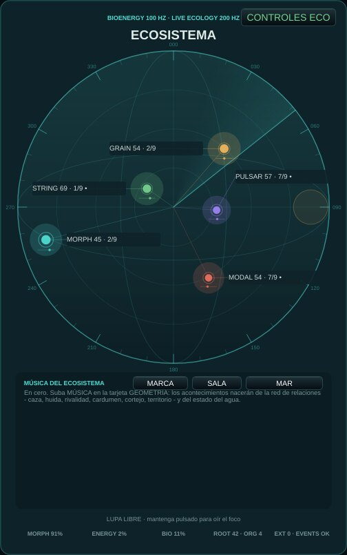
Cinco organismos viven en una esfera de agua: ven, oyen, cazan, huyen, cortejan y defienden territorio. Las líneas de colores son la red de relaciones; el panel inferior muestra el estado del agua, la tensión, la tonalidad y los últimos acontecimientos. Mantenga pulsado sobre la esfera para mover la lupa y escuchar de cerca.
Pruebe: Observe una línea coral (una caza) engrosarse y escuche el zumbido terminal y la captura; después, una cadencia.
| COHESIÓN | Cuánto nada y canta junto el cardumen. |
|---|---|
| PELIGRO | Miedo en el agua: acentos más fuertes, más ornamentos, más huidas. |
| FOCO DISPERSO | Modo de escucha: pocos eventos, enfocados. |
| MEMORIA DE ENERGÍA | Modo de escucha: la energía recordada y liberada despacio. |
| CICLO GEOMÉTRICO | Modo de escucha: los ciclos de las órbitas conducen. |
| DERIVA COLECTIVA | Modo de escucha: el grupo deriva junto. |
ECOLOGÍA
Deseo y geometría
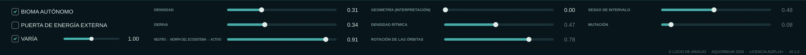
La franja inferior reúne el deseo del ecosistema (densidad, deriva, morph) y el secuenciador geométrico de las órbitas. El deseo cambia tendencias, nunca escribe acontecimientos.
Pruebe: CONTROLES ECO (en el acuario) abre cohesión, peligro, los modos de escucha y las escenas.
| DENSIDAD | Cuánto sucede: el deseo de densidad del ecosistema. |
|---|---|
| DERIVA | Agitación: a la izquierda agua calma, a la derecha inquieta. |
| NEUTRO ← MORPH DEL ECOSISTEMA → ACTIVO | De una mezcla neutra a la plena influencia espacial y tímbrica del ecosistema. |
| GEOMETRÍA (INTERPRETACIÓN) | Cero: geometría autónoma. Súbalo para activar ritmo, rotación, intervalos y mutación; los cambios aparecen en los próximos eventos. |
| DENSIDAD RÍTMICA | Cuántos pasos de cada órbita suenan. |
| ROTACIÓN DE LAS ÓRBITAS | Gira dónde empieza el patrón de cada órbita. |
| SESGO DE INTERVALO | Inclina los pasos melódicos hacia intervalos menores o mayores. |
| MUTACIÓN | Con qué frecuencia las órbitas cambian de forma. |
| BIOMA AUTÓNOMO | El bioma vive y suena solo; apáguelo para tocarlo solo desde fuera. |
| PUERTA DE ENERGÍA EXTERNA | Las notas externas (MIDI, teclado) liberan la energía del bioma. |
| VARÍA | VARÍA: los controles se mueven solos a lo largo de la música, despacio y en relación, alrededor de donde la semilla o su mano los dejó - más cálidos y rápidos en el clímax de la pieza, asentándose en el reposo. La etapa de salida nunca se mueve. Mueva un control y respirará alrededor de su valor. Apagado: todo queda donde está. Cada apertura también propone otro bioma - agua, luz, población, cuerpos, qué módulos despiertan; el estado que usted dejó queda guardado como opening.previousStateV1 en las preferencias. |
CEREBRO
Incertidumbre y estado
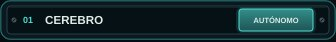
La bioenergía y las decisiones internas del bioma: no necesita ninguna nota externa para vivir. Su estado alimenta todas las demás tarjetas.
Pruebe: Deje el bioma solo unos minutos y escuche cómo atraviesa el día y la estación.
| RELOJ | CEREBRO: con qué frecuencia gira el registro del Cerebro (0,06 a 0,9 Hz). Centro = como antes. |
|---|---|
| COORDINACIÓN | CEREBRO: cuánto comparten los organismos una inclinación - en 0 cada uno la suya, en 1 un cardumen. Cero = como antes. |
GEOMETRÍA
Forma, estructura y música ecológica
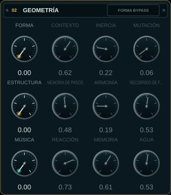
Tres capas de composición: FORMA (una memoria de Markov de las secciones), ESTRUCTURA (memoria de pasos y armonía) y la MÚSICA del ecosistema, donde los acontecimientos nacen de la red de relaciones entre los organismos y del estado del agua.
Pruebe: Suba MÚSICA a 1 y mueva AGUA despacio a la izquierda: escuche la música congelarse en cristal; luego a la derecha, hasta la turbulencia y el hervor.
| FORMA | Cero: memoria formal transparente. Súbalo para desplazar sección y contorno en los próximos eventos colectivos. |
|---|---|
| CONTEXTO | Cuánto el estado ecológico atrae la próxima región formal. |
| INERCIA | Tendencia a permanecer en la región formal actual. |
| MUTACIÓN | Probabilidad distribuida de saltos entre regiones formales. |
| ESTRUCTURA | Cero: camino anterior intacto. Súbalo para activar la memoria de pasos y la progresión. |
| MEMORIA DE PASOS | Contribución de la memoria direccionable a la altura y duración de los eventos. |
| ARMONÍA | Contribución de los acordes ponderados al campo de alturas. |
| RECORRIDO DE FASE | Recorrido ecológico: día a la izquierda, estación a la derecha. |
| MÚSICA | Cero: ruta anterior intacta. Súbalo para que la música venga del ecosistema: caza, huida, cortejo, territorio, la red de relaciones. |
| REACCIÓN | Cuánto reaccionan los organismos a lo que ven y oyen a través del agua. |
| MEMORIA | Izquierda: los cantos se repiten (identidad). Derecha: se transforman y se copian entre aliados. |
| AGUA | Centro: el agua sigue la estación. A la izquierda se enfría hacia el hielo; a la derecha se calienta hacia el hervor. El cambio de estado lleva el tiempo del calor latente. |
TIMBRE
Los cuerpos de los organismos
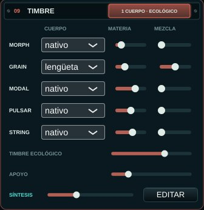
Cada organismo puede cantar con un segundo cuerpo - voz, materia, soplo, cuerda, gota, pliegue, membrana, vidrio, coro, arco o lengüeta - mezclado con su cuerpo nativo. El TIMBRE ECOLÓGICO deja que el agua, la caza, la huida, el cortejo, el vigor y la salud los transformen. Abajo, SÍNTESIS y EDITAR abren el dispositivo de síntesis: una voz por organismo que usted construye, tocada por el ecosistema.
Pruebe: Dé la voz al MORPH y la gota al PULSAR, suba su MEZCLA y luego el TIMBRE ECOLÓGICO: cuando el cazador persigue, su voz se afila; cuando el agua hierve, las gotas se espesan.
| CUERPO | El segundo cuerpo de este organismo: voz (canto formántico), materia (modos armónicos → membrana), soplo, cuerda, gota de agua, pliegue, membrana (tambor de agua → piel), vidrio frotado, coro, arco (cuerda frotada) o lengüeta (el tubo de un clarinete). |
|---|---|
| MATERIA | MATERIA: el carácter dentro del cuerpo (las vocales de la voz y del coro; armónico → membrana; el aire del soplo; punteada → frotada; gotas → lluvia; el pliegue; tambor flojo → piel tensa; el brillo y el batido del vidrio; el arco de sul tasto a sul ponticello; la embocadura de la lengüeta, oscura a brillante). |
| MEZCLA | MEZCLA: cuánto del segundo cuerpo suena junto al cuerpo nativo. |
| TIMBRE ECOLÓGICO | TIMBRE ECOLÓGICO: cuánto la vida del ecosistema transforma la materia y la presencia de los cuerpos (agua, caza, huida, cortejo, vigor, salud). |
| APOYO | APOYO: el nivel de los tres organismos de apoyo - GRAIN, MODAL, STRING - frente a MORPH y PULSAR, de -6 a +24 dB. Quedan unos 22-26 dB por debajo del primer plano; súbalo para traerlos al frente. 0 dB al inicio. |
El dispositivo de síntesis
Una voz que usted construye, para cada organismo
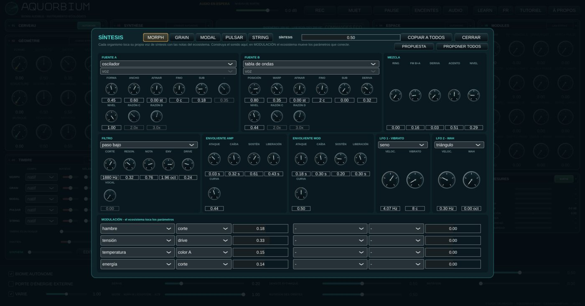
TIMBRE → EDITAR abre un sintetizador por organismo: dos fuentes (oscilador, ruido, FM, tabla de ondas, aditiva, pulsar, cuerda, materia, caos, realimentación o uno de los cuerpos), RING y FM entre ellas, un filtro, dos envolventes y dos LFO. El ecosistema toca las notas; en MODULACIÓN, la vida del bioma - el hambre, la tensión, la distancia, la temperatura del agua - mueve los parámetros que conecte.
Pruebe: PROPONER TODOS, y SÍNTESIS a la mitad; luego cambie una vía a la vez y escuche lo que el ecosistema hace con ella. El tutorial tiene cinco lecciones sobre el dispositivo.
| PROPUESTA | PROPUESTA: un patch de partida para este organismo, sacado de su especie (fuentes, gesto, registro) y de su estrategia ecológica (lo que llega a la matriz), y nivelado con los demás. Cada clic saca otro; el primero de una sesión sigue su semilla. Edite a partir de ahí. |
|---|---|
| MEZCLA | SÍNTESIS: cuánto de la voz de síntesis de cada organismo suena en lugar de su propio cuerpo. En cero el instrumento suena exactamente como antes. |
SÍNTESIS
Voces orgánicas
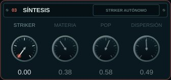
El Striker granular: impactos hechos de partículas, del polvo al metal resonante.
Pruebe: Suba STRIKER y mueva MATERIA y DISPERSIÓN mientras el bioma toca.
| STRIKER | Cero: Striker autónomo. Súbalo para activar MATERIA, POP y DISPERSIÓN; responden en los próximos impactos. |
|---|---|
| MATERIA | De polvo breve a metal resonante. |
| POP | Cantidad de partículas por impacto. |
| DISPERSIÓN | Dispersión temporal y espectral. |
ESPACIO
Perspectiva y memoria
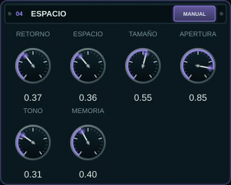
El espacio compartido donde los sonidos de los organismos se reflejan: primeras reflexiones cuyo tamaño, apertura y tono siguen el acuario.
Pruebe: Suba ESPACIO y TAMAÑO para una gran sala de agua; baje TONO para un espacio más hondo y oscuro.
| RETORNO | Cantidad audible del espacio compartido. |
|---|---|
| ESPACIO | Cero: Espacio autónomo. Súbalo para activar TAMAÑO, APERTURA, TONO y MEMORIA. RETORNO funciona por separado. |
| TAMAÑO | Escala temporal de los reflejos. |
| APERTURA | Apertura lateral de los reflejos. |
| TONO | Apertura espectral de los reflejos. |
| MEMORIA | Persistencia del campo de reflejos. |
AMBIENTE
Firma y lecho
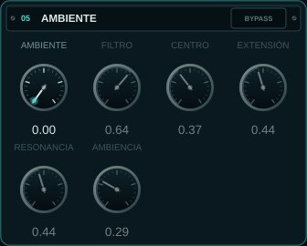
Una firma espectral de ocho bandas del bioma y un lecho de ruido guiado por la estación, el agua y la integridad del vidrio.
Pruebe: Suba un poco AMBIENTE y AMBIENCIA: el acuario gana su propio aire.
| AMBIENTE | Cero: bypass transparente. Súbalo para activar filtro y atmósfera. |
|---|---|
| FILTRO | Mezcla seca de la firma espectral de ocho bandas. |
| CENTRO | Centro logarítmico del banco espectral. |
| EXTENSIÓN | Extensión en octavas de las ocho bandas. |
| RESONANCIA | Selectividad de las bandas espectrales. |
| AMBIENCIA | Lecho de ruido guiado por estación, agua e integridad. |
COLA
Persistencia sintética
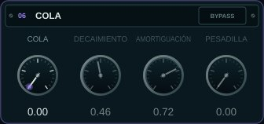
Una reverberación tardía y difusa tras las primeras reflexiones.
Pruebe: Con PESADILLA la cola se retuerce: úsela con moderación, como un acontecimiento.
| COLA | Cero: bypass transparente. Súbalo para oír la cola tardía. |
|---|---|
| DECAIMIENTO | Duración de la persistencia sintética. |
| AMORTIGUACIÓN | Absorción progresiva de las frecuencias altas. |
| PESADILLA | Torsión de la matriz de realimentación. |
MASTER
Salida e integridad
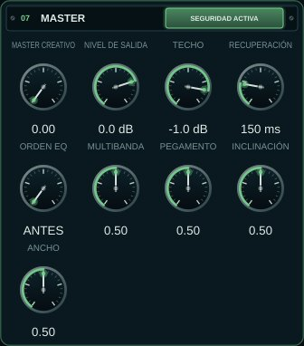
El nivel final, el limitador de seguridad y un master creativo opcional (dinámica multibanda, anchura, pegamento).
Pruebe: NIVEL DE SALIDA es el volumen. SILENCIAR y PAUSA están en la cabecera.
| MASTER CREATIVO | Macro de crossover, dinámica multibanda, anchura y pegamento óptico. Cero es un bypass exacto. |
|---|---|
| NIVEL DE SALIDA | Nivel técnico final: -18 dB a +6 dB; 0,75 equivale a 0 dB. |
| TECHO | Techo del limitador: -6 dB a -0,1 dB; inicial -1 dB. |
| RECUPERACIÓN | Recuperación del limitador: 50 ms a 500 ms; inicial 150 ms. |
| ORDEN EQ | Dónde va el EQ de inclinación del MASTER CREATIVO: ANTES de la dinámica multibanda (la dinámica reacciona al sonido ya inclinado) o DESPUÉS (la inclinación colorea lo que la dinámica dejó). Solo actúa con el MASTER CREATIVO por encima de cero. |
| MULTIBANDA | MASTER CREATIVO: la dinámica multibanda, menos o más que la ecología. Centro = solo la ecología. |
| PEGAMENTO | MASTER CREATIVO: el pegamento lento, menos o más. Centro = solo la ecología. |
| INCLINACIÓN | MASTER CREATIVO: más oscuro (izquierda) o más claro (derecha) que la luz del día. Centro = solo la ecología. |
| ANCHO | MASTER CREATIVO: más estrecho o más ancho que la cohesión (el grave queda mono). Centro = solo la ecología. |
MÓDULOS
Banco integrado
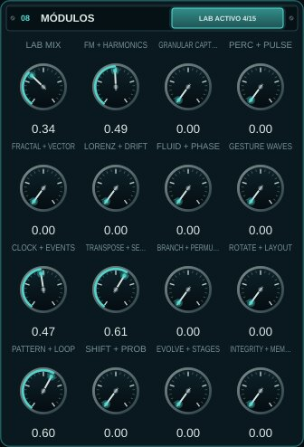
Todos los prototipos codificados, reunidos en quince familias tocables: un laboratorio. LAB MIX en cero mantiene el instrumento tal cual.
Pruebe: Suba LAB MIX y luego una familia a la vez, escuchando lo que añade cada una.
| LAB MIX | Bypass maestro del banco: cero conserva exactamente el instrumento anterior |
|---|---|
| FM + HARMONICS | FM, armónicos, BiomaBass, cardumen, vocoder y contagio |
| GRANULAR CAPTURE | Granular, aislador, resíntesis reciente y foco lock-in |
| PERC + PULSE | Percusión, máscara estocástica y HarmonicRippleVoice |
| FRACTAL + VECTOR | Fractal, vector, polígono X/Y y FrequencyShifter |
| LORENZ + DRIFT | Lorenz, derivas y autorrealimentación acotada |
| FLUID + PHASE | Movimiento, cuadratura, inercia y binaural ligero |
| GESTURE WAVES | MotionGestureRecorder y banco de ondas de movimiento |
| CLOCK + EVENTS | Reloj, eventos, resonadores y L-system |
| TRANSPOSE + SELECT | AccumulatingTransposer y ThresholdStepSelector |
| BRANCH + PERMUTE | Ramificación, umbrales reactivos, matriz y Spotlight |
| ROTATE + LAYOUT | Rotación, disposición y pools compartidos/reconfigurables |
| PATTERN + LOOP | Bancos, RandomToLoop y autómata celular |
| SHIFT + PROB | ShiftRegisterMemory y ProbabilityDistribution |
| EVOLVE + STAGES | Evolución, realimentación cruzada, umbrales y escenas de comportamiento |
| INTEGRITY + MEMORY | Integridad, memoria, hambre y bus sin entrada |
Lupa
La lupa en el vidrio
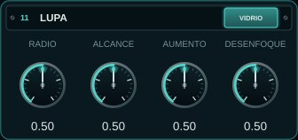
Mantenga pulsado sobre la esfera para apoyar la lupa en el vidrio y escuchar de cerca a los seres que pasan por allí; el resto queda desenfocado. Los cuatro controles dan la forma de la lupa.
Pruebe: Siga a un organismo con la lupa mientras cruza la esfera.
| RADIO | LUPA: el tamaño del punto enfocado en el vidrio. Centro = como antes. |
|---|---|
| ALCANCE | LUPA: cuán hondo en el agua llega la lupa desde el vidrio. Centro = como antes. |
| AUMENTO | LUPA: cuánto avanzan los organismos enfocados. Centro = como antes. |
| DESENFOQUE | LUPA: cuánto retroceden los organismos desenfocados. Centro = como antes. |
Medidores
La salida, medida
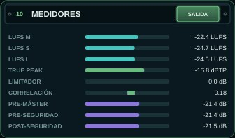
El loudness (LUFS momentáneo, corto e integrado), el true peak, la reducción del limitador de seguridad, la correlación estéreo y las tres tomas que el ecosistema puede escuchar: antes del MASTER CREATIVO, antes del limitador y después de él.
La cabecera
Grabar, silenciar, escuchar y aprender
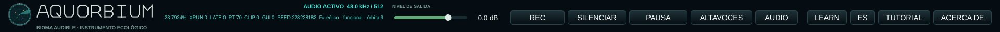
El volumen de salida, REC, SILENCIAR y PAUSA, ALTAVOCES o AURICULARES, la elección del AUDIO, LEARN, el idioma, el TUTORIAL y ACERCA DE. La línea de estado muestra el mundo de la sesión y su semilla.
Pruebe: Active LEARN y pase el ratón sobre cualquier control.
| REC | Graba lo que escucha (después de MASTER y SILENCIAR) en un WAV flotante de 32 bits en Música/Aquorbium/<fecha>/, con un texto al lado: la semilla de la sesión y los controles. Hasta una hora. |
|---|---|
| SILENCIAR | Cierra el sonido con una rampa corta; el ecosistema sigue viviendo. |
| PAUSA | Silencia y congela el tiempo del ecosistema; CONTINUAR sigue donde se detuvo. |
| ALTAVOCES / AURICULARES | ALTAVOCES: la mezcla estéreo. AURICULARES: cada organismo oído desde donde está en la esfera - izquierda y derecha, delante y detrás, arriba y abajo - a través de una cabeza (el modelo binaural de Brown & Duda: la sombra de la cabeza, el retardo entre los oídos, el pabellón). Úselo solo con auriculares. |
| AUDIO | Elegir salida, frecuencia y búfer. Para diagnosticar chasquidos, pruebe 48 kHz / 512 muestras. |
| LEARN | LEARN activo: apunte a cualquier control o tarjeta y su explicación aparece abajo |
| TUTORIAL | Una visita guiada al instrumento, capítulo a capítulo |
| ACERCA DE | Qué es el Aquorbium, sus conceptos, créditos y licencia |